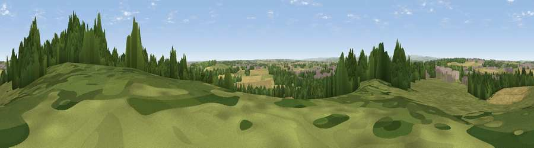

Viewpoint near Thurcroft
#23143 in England · top 37% of its area beats it · near ThurcroftThe view, rendered

A 360° render of this exact spot computed from the terrain model, tree cover and land cover — summer colours, afternoon light, calibrated against photographs of famous viewpoints. Real trees, hedges and buildings will differ in detail.
The panorama
Grey silhouette: terrain skyline in each direction (720 bearings, Earth curvature and refraction included). Dashed green: skyline with trees (+15 m) and buildings (+8 m) as obstacles. Blue strip: how far the ground is visible on each bearing.
Where the view opens
Wedge length = distance to the farthest visible ground on that bearing (vegetation-aware). Rings at 10, 25 and 50 km.
What fills the view
34% grassland · 31% cropland · 23% woodland · 11% built-up ·
Angular shares of the visible panorama (visual magnitude), not map area. Landscape diversity 0.59 (0–1 Shannon).
Key numbers
More beautiful places nearby
The staircase of upgrades: each row has a higher view potential than everything closer. Driving times are estimates from straight-line distance, calibrated against real road routing — check an actual route before setting out.
| Place | Direction | Drive | Score |
|---|---|---|---|
| Viewpoint near Dalton Magna | NW · 5 km | ~10 min | 58.4 |
| Viewpoint near Maltby | NE · 5 km | ~10 min | 70.8 |
| Viewpoint near Oughtibridge | WNW · 19 km | ~32 min | 72.5 |
| Viewpoint near Wharncliffe Side | WNW · 20 km | ~34 min | 75.2 |
| Tissington Hill | SW · 51 km | ~72 min | 75.5 |
| Viewpoint near Greenfield | WNW · 52 km | ~73 min | 76.0 |
| Wild Bank | W · 52 km | ~74 min | 76.2 |
| Viewpoint near Carrbrook | WNW · 52 km | ~74 min | 77.1 |
53.40148, -1.24004 · source: screening · position refined by local search. Computed location — check access rights before visiting.